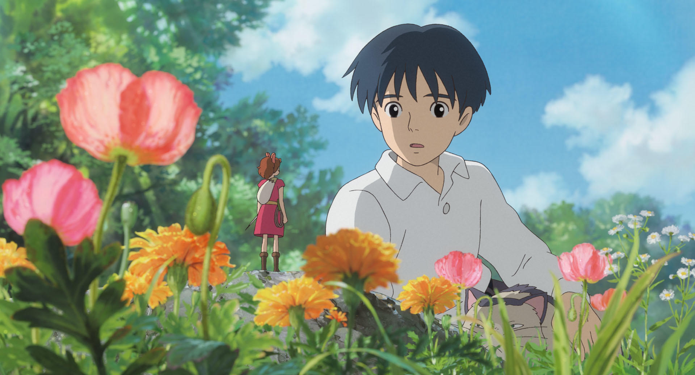

About Arrietty
아리에티는 지브리 스튜디오의 애니메이션 "마루 밑 아리에티"에 등장하는 캐릭터이다. 인간의 집 바닥 아래에 숨어 사는 소인 소녀로, 호기심이 많고 용감한 성격을 지니고 있다. 가족과 함께 인간 몰래 필요한 물건을 빌려 살아가며, 우연히 인간 소년과 만나면서 새로운 세계를 경험하게 된다.

아리에티와 인간 소년
Arietty's Characteristics
- 호기심이 많아, 새로운 인간 세계의 물건들을 알고 싶어 한다.
- 작은 소인임에도 불구하고 인간의 집에 들어가 필요한 것들을 직접 구한다.
- 독립적이고 책임감이 강해, 가족을 항상 돕는다.
Arietty's Friends
아리에티에겐 처음으로 인간 세계에서 만난 친구 쇼우와
자연속에서 홀로 살아가며 아리에티 가족에게 도움을 준 스피라가 있다.